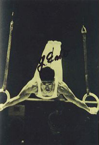

Yukio Endo (JPN)
1964 Olympic AA Champion
1964 Olympic PB Champion
1962 World FX Champion

Medal Total
Olympic Games: 5 Gold,
2 Silver
World Championships: 3 Gold, 5 Silver, 2 Bronze
Yukio Endo was born on January 18, 1937 in Akita. He trained under legendary coach Akimoto Kaneko.
Competition Results
1960
Olympic Games: 1st Team, 5th AA, 4th HB
1961
AAU Championships: 2nd AA, 2nd FX, 2nd R, 2nd V, 4th HB, 6th PB
USA-JPN Dual Meet: 1st Team, 2nd AA
1962
GER-JPN Dual Meet: 1st Team, 1st AA, 1st PH, 1st R
ITA-JPN Dual Meet: 1st Team, 2nd AA, 1st FX, 1st PH
World Championships: 1st Team, 2nd AA, 1st FX, 2nd
R, 2nd HB, 3rd V, 3rd PB
1963
NHK Cup: 1st AA
1964
JPN Championships: 1st AA, 1st FX, 1st PH, 1st V, 1st PB, 1st HB, 2nd
R
JPN-HUN Dual Meet: 1st Team, 2nd AA
Olympic Games: 1st Team, 1st AA, 1st PB, 2nd FX,
5th HB, 6th R, 6th V
1965
JPN Championships: 1st AA
1966
World Championships: 1st Team, 7th AA, 2nd FX, 2nd HB,
4th V
1967
Pre-Olympics: 3rd AA
1968
Olympic Games: 1st Team, 8th AA, 2nd V, 6th HB
This page was created on December
23, 2004 and was last updated on November 23, 2006.
© Gymn Forum